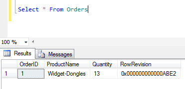

SQL Server has a built-in data type that automatically marks changes to rows. This data type is “rowversion”. Formerly this data type was named “timestamp”, and Microsoft recommends you start using the new name. This data type can be used for 2 main purposes: optimistic record locking and data queue processing.
Before getting to how it is used, let’s look at what it is.
Row version is a read-only column that SQL Server will update for you automatically, as if by trigger. You cannot insert or update into this column. Also, you may only have one rowversion column per table.
The value of the column is (more or less) a number. It will automatically increment itself by one each time the row is modified. The number will be unique for every row. So if you do an Update SQL statement that updates 3 rows, the rowversion field values will have 3 unique, sequential values. The numbers are unique with respect to the database name.
Under the hood, the rowversion column is actually a binary(8) field. These eight bytes can be thought of as a unsigned 64-bit integer.
Let’s start by creating a table with a rowversion column.
Create Table Orders (
OrderID int not null identity(1,1)
Constraint PK_Orders Primary Key
, ProductName varchar(50) not null
, Quantity int not null
, RowRevision rowversion
)
Next let’s insert a row.
Insert Into Orders(ProductName, Quantity)
Values ('Widget-Dongles', 13)
Then we query the table.

If you were to update the row, the RowRevision column would increment.
The values reported by the rowversion column can be converted to literal values and used in SQL statements. The literal value can be defined using the binary (hexadecimal) value or its equivalent value converted to a decimal integer. You can use the standard equality operator. Note that if using the binary syntax you must have the correct number of leading zeros.
Select *
From Orders
Where RowRevision = 0x000000000000ABE2
Select *
From Orders
Where RowRevision = 44002
There is one more thing to know when working with rowversion
column. SQL Server has a function that will return the last
rowversion value that it assigned to a row. That function is
called @@DBTS.
Select @@DBTS
So let’s stay you want to allow users to manually edit records on a form. With this type of application there will be an implied behaviour as to what happens when two users attempt to update the same record at the same time. These behaviours fall into 1 of 3 general patterns: pessimistic locking, no locking, and optimistic locking.
Pessimistic locking can be used when the desired behaviour is
that other users are blocked after the first user opens the
record for editing. The second user gets a good error message
saying why they aren’t allowed to edit the record at this time.
This is typically implemented by the first process writing to a
special field that represents the lock. For example,
Update Order Set LockedBy = ‘Tim’ Where OrderID = 1 . Only the user that holds the lock may edit the record. It is
usually best to make sure there is some kind of timeout is built
into the algorithm so that the lock cannot be held for days at a
time. Also, having a privilege to allow an Admin to release a
lock may be beneficial. Instead of implementing this with a lock
column in the table, a database transaction could be used
instead. Because the lock will block all other users in the
system, this can be a serious disadvantage in systems that need
to scale.
The “no record locking” strategy is to simply allow the last person to save the record win. Users will not be alerted to the fact that one of their colleagues is also modifying the same record at the same time. Although this scales well to have a large number of users, confusion can ensue when the changes one user made to a record appear to get reverted.
Optimistic record locking, like pessimistic, will not allow multiple users to edit the same record at the same time. However with optimistic locking, the check is not done until attempting to save the data. This is different than pessimistic where the record is blocked from even being loaded in edit mode. Optimistic locking will allow multiple users to open the record in edit mode, assuming (optimistically) that most users will simply cancel or make no changes (they are using the edit screen to simply view the details of the record).
Optimistic record locking relies on a version column to be added to the table. Every update to row must change the value in this version field. When displaying the record on the edit screen the entire record is loaded, including its version. If the user changes fields on the screen the record is saved. While saving the program will change the version field value automatically. Also, during the save the program will verify that the version field value currently in the database is the exact same value as when the current user first loaded the record. If the version field value has changed, then another user must have changed this and the current user’s changes are cancelled.
I have seen various strategies for attempting to manually update a version column in each application. These strategies have used varchar, datetime, or int data types for the version column. However it is best just to use a rowversion column and let SQL Server ensure that this value is incremented correctly. Why implement manually what the database can do for you automatically?
For the tables you want to implement an optimistic record locking strategy on, simply add a rowversion column. When updating the records add the rowversion column as a term in the Where clause along with the primary key. If another user has modified the row the update statement will update zero rows. If this occurs you can inform your user that another user has modified or delete the record. Hopefully that will be unlikely, after all we are being optimistic.
Another way I often use rowversion columns is to build data processing queues. Let’s say the NSA comes to you with a new requirement that they want reported to them all orders where exactly 13 Widget-Dongles were purchased. The problem with this requirement is that you don’t have a database index on the Orders table to quickly identify orders that match this criteria. Also you’d need to add a ReportedToNSA column to your table to track records that have been reported.
You could add these indexes and flags to the database, but this is just one requirement. Different users will have a wide variety of requirements. After a while the database will get very messy with an index and flag being added for every requirement.
Another strategy can be used to implement this is to leverage a rowversion column. This column will need to be indexed (which by the way is not required for optimistic record locking).
Each data processing queue (i.e. requirement) would persist a pointer to the rowversion column. For example the “NSA 13 Widget-Dongle” requirement would have a pointer value of 0x000000000000ABE2. The algorithm knows that any records in the Orders table with 13 Widget Dongles that have a RowRevision value of less that or equal to this value have already been reported to the NSA. When the algorithm wants to query the Orders table for new records that might need to be reported, it only need to look at records with a RowRevision greater than this value. Whenever an order is added or modified in the table, the algorithm will find it. Even if there are millions of rows in the Orders table, the algorithm uses a database index that will limit the search to only the few new rows.
The basic algorithm to implement this data queue is as follows:
- Read your current pointer position.
-
Read the current row version value from the database (
Select @@DBTS) - Query the Orders table where RowRevision is greater than the current pointer position and filtering with respect to the business rule requirement (e.g. Quantity = 13 and ProductName = ‘Widget-Dongles’). Order the results by RowRevision ascending.
- For each record found, process it (e.g. report it to the NSA). Then update the stored current pointer position (read in step #1) to the current RowRevision value of the record that was just processed.
- Once all records are processed (even if zero were) update the current pointer position with the value read in step #2. This ensures that the algorithm will only scan the Orders table once.
Storing the current pointer positions can be done in another
table. This will be a simple key value pair table. The values
(current pointer position) column should have the data type
binary(8). This is the same data type as what is returned by the
@@DBTS function and the rowversion column’s
underlying type.
The “processing” done by the algorithm can be anything. A very common use case is to replicate the record to another system. The same algorithm can be used to replicate all rows in a table. To replicate all rows, just remove the business rule filtering from the algorithm.